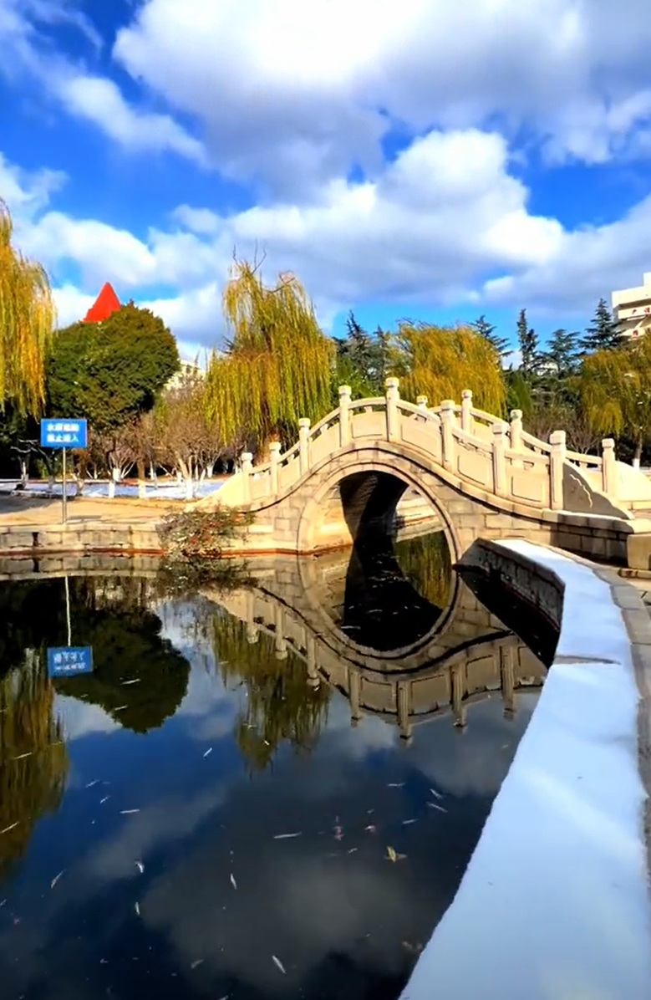
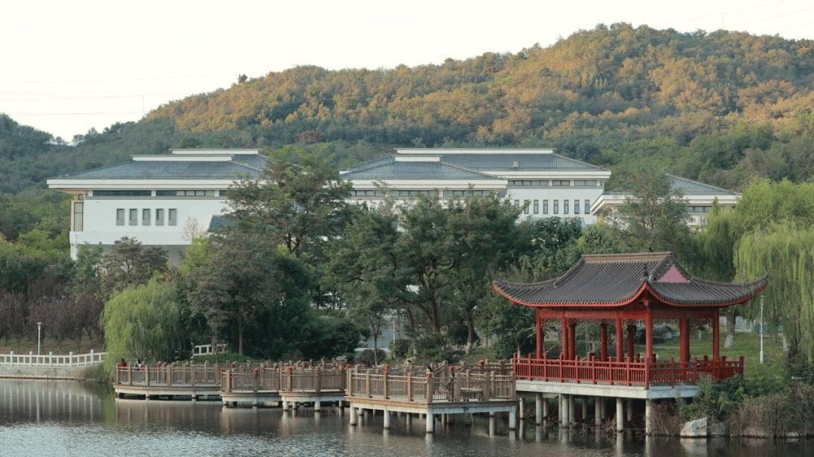

春风拂过鲁东大学的校园，处处都洋溢着温柔而蓬勃的生机。清晨的阳光穿过枝叶，洒在蜿蜒的小路上，也洒在错落有致的教学楼间，让整座山海学府都笼罩在一层柔和的光晕之中。道路两旁的树木早已褪去冬日的沉寂，抽出鲜嫩的新芽，叶片层层舒展，在微风中轻轻晃动，仿佛在迎接每一位匆匆走过的学子。樱花、海棠、紫荆次第开放，粉白相间的花瓣簇拥在枝头，远远望去如云似霞，走近时又能闻到淡淡的花香，清新而不浓烈，让人心情格外舒畅。偶尔有花瓣随风飘落，落在肩头、发间或是青青的草地上，为校园平添了几分诗意与浪漫。漫步其间，既能感受到自然之美，也能体会到浓厚的书香气息，朗朗的读书声与清脆的鸟鸣交织在一起，构成了独属于鲁大春日的美好画面。
春日的鲁东大学，不仅有动人的风景，更有朝气蓬勃的身影。操场上，同学们奔跑跳跃，挥洒着青春的汗水；树荫下，有人安静地看书，有人轻声交谈，处处都是轻松而积极的氛围。湖边的垂柳抽出新枝，细长的枝条随风轻摆，倒映在清澈的水面上，随波轻轻晃动，格外柔美。花坛里各色花卉竞相绽放，红的热烈、粉的娇嫩、黄的明亮，将校园装点得五彩斑斓。蜜蜂在花间忙碌，蝴蝶翩跹起舞，为宁静的校园增添了灵动的气息。春风带着淡淡的草木清香扑面而来，让人倍感舒适惬意。在这里，春光与书香相融，自然与青春相伴，每一处景色都令人心生欢喜，每一个瞬间都值得珍藏，让人深深感受到校园春日的美好与温暖。

